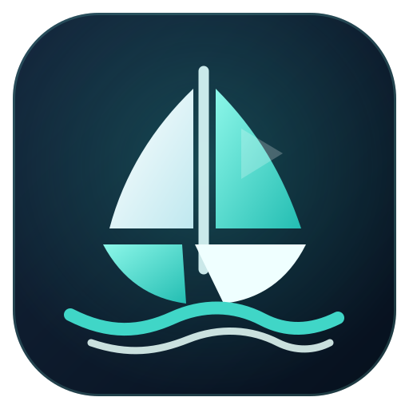

Vela Player
Entre com os dados do seu serviço.
Host
Usuário
Senha
Lembrar neste computador
Entrar
Ordem do servidor
A–Z
Mais recentes
Melhor avaliação
Ano mais recente
Todas as categorias
Todos os anos
Qualquer avaliação
6+ estrelas
7+ estrelas
8+ estrelas
9+ estrelas
Limpar filtros
Assistir
Recomeçar do início
Favoritar
Voltar
EM SEGUIDA
PRÓXIMO
Assistir agora
Cancelar
0:00
0:00
AO VIVO
Automática